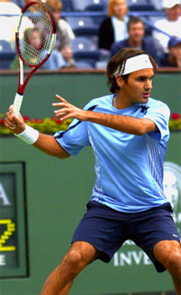
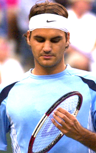
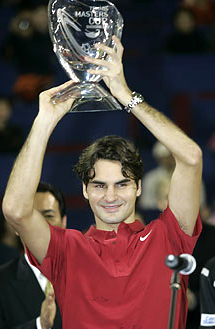

Previous: Emotional and Mental Pitfalls | 🏠 Mental Game Home | Next: Even Champions Choke
Establishing Dominance
Comprehensive unified tennis knowledge base — Fundamentals, Stroke Analysis, Reference Library, and more
Establishing Dominance
By Allen Fox, Ph.D.
Establishing dominance is a matter of will, strength and character.
A closely fought tennis match is a not just a physical battle. It is a struggle of will, mental strength, and character. It is a pervasive personal and emotional contest in which one player ends up on top (at least figuratively) of the other. And one powerful tool that players use to help win these matches is to establish dominance.
What is meant by "dominance?" It is the feeling that inferior players get when they face better players. High ranking or successful players have a way of making their opponents feel weak and ineffectual.
For example, in addition to his game, Roger Federer's simple presence across the net is intimidating. Federer does not just overpower opponents physically.

Psychological weapons a good addition to physical weapons.
He dominates them mentally, and as a consequence, they miss shots against him that they routinely make against other people. They are more likely than normal to become nervous against him or to become discouraged when they get behind.
This psychological weaponry is a handy addition to his arsenal of shots when it comes to conserving energy while winning lots of tournaments. It just makes his job easier, as it can yours in competitive matches.
How does one establish this dominance? You start by recognizing that all of your actions, not just your forehands and backhands, have an effect on your opponent's mental state. Since human beings are a social species, they instinctively react emotionally to the way other people treat them.
For example, if you show that you fear them, they feel strong; if you dismiss their efforts, they feel weak. And they communicate much of this by gesture and body language. So if you appear strong, confident, and impervious, your opponent will tend to feel weak and ineffectual.

Serene and unresponsive on court.
On Court Persona
Along this line, much of Federer's psychological dominance comes from the way he carries himself on court -- erect, confident, and, to all appearances, unresponsive to his opponent's winners or his own errors.
You can do the same. If your opponent hits a great shot, appear to take no notice. Simply walk back into position as you always do -- head up, steady stride, under control, and looking like you are confident, have a plan, and know exactly what you are doing. This is a dominant attitude.
If you make an error, no matter how egregious, act as if nothing at all happened. Just go about your business and ready yourself to play the next point. Realize that displays of frustration, anger, or discouragement are signs of weakness that serve only to strengthen your opponent -- the emotional equivalent of giving him backrubs on changeovers.
If you are moaning and groaning when things are going against you, expect your opponent to fight you to the bitter end. These are submissive gestures, not actions of a dominant competitor, so lose them.
Federer plays at his own pace, regardless of the opponent.
Pacing
Another method of establishing dominance is to control the pace of the match. Even if you are behind in the score, you can still dominate the match pace. Between points you deliberately walk into position at your own pace, taking no notice of your opponent.
If it is slower than your opponent wishes, make him wait; if it is faster, make him feel rushed. You don't do this outside of any written or unwritten rules. You are not trying to be irritating. You are merely determined to play at your own, dominant pace.

Dominant players impose their force of personality on the opponent.
Strategy
Finally, you can dominate with your match strategy. Having a clear game plan and purpose rather than randomly hitting balls into whatever opening may be at hand is intimidating. It indicates that you think you have found a weakness and intend to exploit it.
Thoughtful, purposeful people frighten uncertain people (which are most people). Resist ever allowing your opponent to think that you fear any part of his game.
For example, if you serve into your opponent's forehand and he hits a great return, don't be hesitant about serving immediately to it again, indicating that you were not impressed. (Later, after he misses one, you may decide that the shot is indeed dangerous and largely choose to serve elsewhere, but don't let him feel like he has bullied you.)
If you play a long baseline point and he outsteadies you, don't immediately begin to hit harder or rush the net. Go right back at him and force him to do it again (and, maybe, again). After you win one of these long points you can then decide to adjust your strategy, but you don't want him to feel that you have conceded this part of the field to him. Dominant players move because they choose to move, not because their opponents make them.
Acting in these ways imposes your will and force of personality upon your opponent. It is an unpleasant and heavy burden and your opponent, even though he may be technically better than you, will often falter under it.
This article is excerpted from Allen's new book, Tennis: Winning the Mental Match, which will be available at the end of 2010 on Amazon and on Allen's new website, www.allenfoxtennis.net.
Read More From Allen!
Visit him at www.allenfoxtennis.net

Winning the Mental Match Dr. Allen Fox
Tennis is mentally the most difficult sport due to it’s personal nature which makes winning and losing feel more important than they are. In this new book, Allen offers his proven solutions to problems such as choking, reducing stress, finishing matches, and developing confidence. Based on a life time of high level play and coaching success, it’s a must for all competitive players.
Click Here to Order.

Winning may not be everything, but Dr. Allen Fox points out that, if we are honest with ourselves, winning is still eminently preferable to losing. In his new book, The Winner's Mind, Allen lays out an original step-by-step plan for succeeding at any of life's endeavors, based on his first hand and very personal observations of the careers of both world-class tennis players and successful businessman.
The bottom line is that even if you are not a born champion--and only a tiny percentage of us are--you can still use the success strategies of champions to tilt the odds in your favor. Writing with brutal honesty and dry humor, Fox lays out the common mental characteristics of winners in sports and in life. He explains the critical role of intellect over emotion. He analyzes the struggle between ambition and fear and the insidious and pervasive fear of failure that undermines so many of us.
He then outline how to confront and overcome these fears in your life and career, even when they are initially subconscious. Must reading from one of the great thinkers in tennis, and a Renaissance Man in life. Click Here to Order.
To purchase this book you can also send a check for $17.95 to Allen Fox, 1120 Inverness Place, San Luis Obispo, CA. 93401. The price includes shipping.

Allen Fox PhD is a former world class player, a coach, a psychologist, and one of the most original and insightful analysts in modern tennis. A top 10 American player from the glory days before Open tennis, Fox played many of the legendary greats, among them Roy Emerson, Rod Laver, Stan Smith, and Arthur Ashe. At Pepperdine he developed the men's tennis program into an elite contender for national titles, and gave Brad Gilbert the insights that became the foundation for "Winning Ugly". His book Think to Win is a modern classic. He has also starred in a series of acclaimed videos, including Pro Secrets of Match Play and Allen Fox's Ultimate Tennis Lesson.
Source: tennisplayer.net archive — Establishing Dominance.docx (John Yandell teaching library, 2002-2022). Extracted and rendered as HTML for Tennis Future Lab.